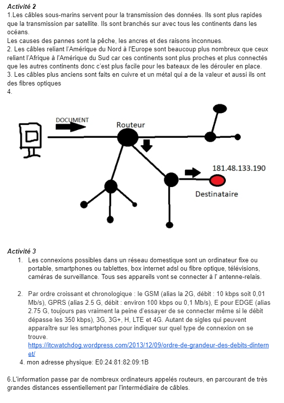

Objetif: réaliser l'activité dans le livrescolaire puis répondre au quizz. Pour finir, faire une Capsule vidéo sur screenomatic de minimum 5 min avec un QCM sur le sujet (mon groupe est le DNS)
Mon groupe: Juan Miguel Agredo et Nicolás Betancur
Activité internet. 16 nov
Faire les activités 2 et 3 . Déposer un Google docs avec vos réponses.

Quizz
Répondre le 8 quizz sur internet. Déposer un docs avec les captures d'écran de vos réponses.